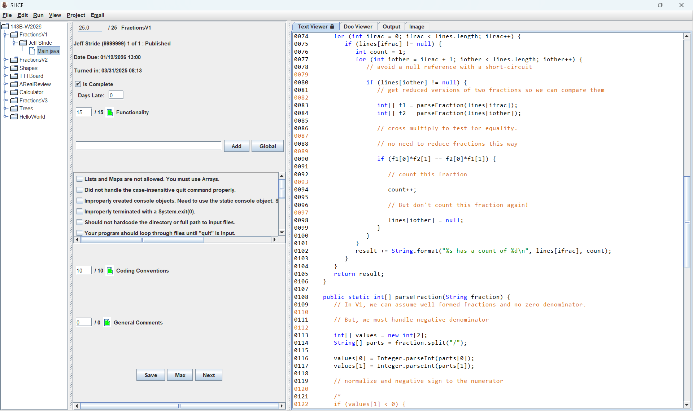

Automated
From submitted code to completed rubric, faster
SLICE handles the repetitive parts of grading: downloading submissions, building or compiling projects, running your tests, and capturing the results. You stay in control of the feedback and score while moving quickly through the students.
- Reuse common comments and reference specific student code
- Summarize scores in a local CSV file
- Email completed rubrics and comments to students
